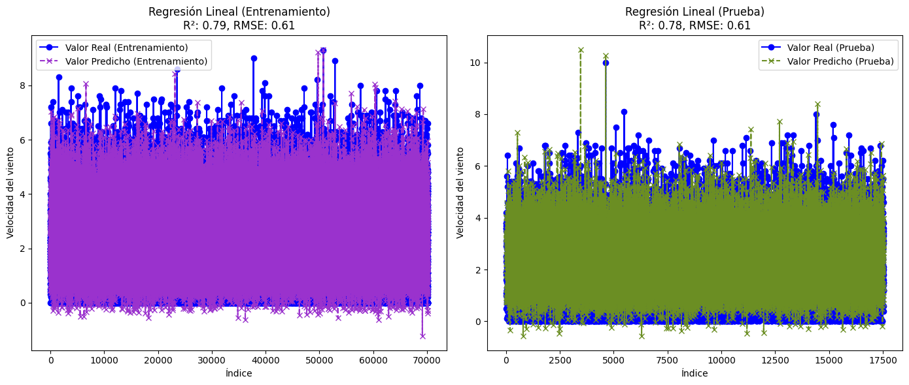

Librerías y módulos necesarios#
import numpy as np
import pandas as pd
import seaborn as sns
from scipy import stats
from sklearn.svm import SVR
import statsmodels.api as sm
import matplotlib.pyplot as plt
from xgboost import XGBRegressor
from sklearn.metrics import r2_score
from sklearn.linear_model import Ridge, Lasso
from sklearn.metrics import mean_squared_error
from sklearn.tree import DecisionTreeRegressor
from sklearn.linear_model import LinearRegression
from sklearn.neighbors import KNeighborsRegressor
from sklearn.ensemble import RandomForestRegressor
from skopt.space import Integer, Categorical, Real
from statsmodels.stats.stattools import jarque_bera
from statsmodels.stats.diagnostic import acorr_ljungbox
from sklearn.metrics import mean_absolute_percentage_error
from sklearn.metrics import mean_squared_error, mean_absolute_error
from sklearn.model_selection import train_test_split
from skopt import BayesSearchCV
Base de datos y métodos útiles#
data = pd.read_csv("C:/Users/valcd/OneDrive/Escritorio/dataparcial2.csv")
data
| hora | direccionviento | velocidadviento | humedadmaxima | humedadminima | temperaturamaxima | temperaturaminima | precipitaciontotal | rafagamaxima | presion_atm_maxima | presion_atm_minima | |
|---|---|---|---|---|---|---|---|---|---|---|---|
| 0 | 12:00 | 0.809017 | 1.8 | 69.0 | 60.0 | 22.6 | 20.7 | 0.0 | 3.8 | 888.2 | 887.7 |
| 1 | 13:00 | 0.965926 | 2.7 | 62.0 | 55.0 | 24.2 | 22.5 | 0.0 | 4.7 | 888.4 | 888.2 |
| 2 | 14:00 | 0.891007 | 2.0 | 56.0 | 50.0 | 25.5 | 24.3 | 0.0 | 4.9 | 888.4 | 888.1 |
| 3 | 15:00 | 0.848048 | 2.5 | 52.0 | 44.0 | 27.4 | 25.0 | 0.0 | 5.8 | 888.1 | 887.4 |
| 4 | 16:00 | 0.224951 | 2.4 | 50.0 | 43.0 | 27.1 | 25.5 | 0.0 | 5.8 | 887.4 | 886.5 |
| ... | ... | ... | ... | ... | ... | ... | ... | ... | ... | ... | ... |
| 87688 | 19:00 | -0.615661 | 5.6 | 83.0 | 78.0 | 21.8 | 21.1 | 0.0 | 12.3 | 879.8 | 879.1 |
| 87689 | 20:00 | -0.469472 | 4.9 | 84.0 | 79.0 | 21.7 | 21.0 | 0.0 | 9.9 | 879.2 | 878.9 |
| 87690 | 21:00 | -0.484810 | 4.5 | 86.0 | 82.0 | 21.2 | 20.6 | 0.0 | 8.9 | 879.8 | 879.2 |
| 87691 | 22:00 | -0.484810 | 3.2 | 88.0 | 85.0 | 20.6 | 20.2 | 0.0 | 8.0 | 880.5 | 879.6 |
| 87692 | 23:00 | -0.573576 | 2.3 | 95.0 | 88.0 | 20.2 | 19.3 | 0.6 | 7.5 | 881.1 | 880.5 |
87693 rows × 11 columns
X = data.drop(columns=['hora','velocidadviento']) # Se toman todas las columnas excepto la objetivo
y = data['velocidadviento'] # Se toma solo la columna objetivo
def errorporc(actual, predicho):
res = np.empty(actual.shape)
for j in range(actual.shape[0]):
if actual[j] != 0:
res[j] = (actual[j] - predicho[j]) / actual[j]
else:
res[j] = predicho[j] / np.mean(actual)
return res
def MAPE(y_true, y_pred):
return np.mean(np.abs(errorporc(np.asarray(y_true), np.asarray(y_pred))))*100
# Método para calcular los residuos del modelo
def residuos(y_test, y_prediccion):
residuo = y_test - y_prediccion
ljung = acorr_ljungbox(residuo, lags=[10], return_df=True)['lb_pvalue'].values[0]
jarque = jarque_bera(residuo)
jarque = jarque[1]
return ljung, jarque
MODELOS#
X_train, X_test, y_train, y_test = train_test_split(X, y, test_size=0.2, random_state=21)
KNN#
knn = KNeighborsRegressor()
knn_paramgrid = {"n_neighbors": (3, 50),"p": (1, 2)}
knn_bayessearch = BayesSearchCV(estimator=knn, search_spaces=knn_paramgrid,n_iter=30,cv=5,random_state=21,verbose=0)
knn_bayessearch.fit(X_train, y_train)
bestknn = knn_bayessearch.best_estimator_
ypredknn = bestknn.predict(X_test)
mseknn = mean_squared_error(y_test, ypredknn)
rmseknn = np.sqrt(mseknn)
mapeknn =MAPE(y_test,ypredknn)
maeknn = mean_absolute_error(y_test, ypredknn)
r2knn = r2_score(y_test, ypredknn)
ljungboxknn, jarqueberaknn = residuos(y_test, ypredknn)
bestparamsknn = knn_bayessearch.best_params_
valoresknn = {'Modelo': ['KNN'],'MSE': [mseknn],'RMSE': [rmseknn],'MAPE': [mapeknn],'MAE': [maeknn],'R2': [r2knn],'Ljung-Box p-value': [ljungboxknn],'Jarque-Bera p-value': [jarqueberaknn],'Hiperparámetros': [bestparamsknn]}
cuadro1 = pd.DataFrame(valoresknn)
cuadro1
| Modelo | MSE | RMSE | MAPE | MAE | R2 | Ljung-Box p-value | Jarque-Bera p-value | Hiperparámetros | |
|---|---|---|---|---|---|---|---|---|---|
| 0 | KNN | 0.418614 | 0.647003 | 35.56147 | 0.497178 | 0.757206 | 0.223981 | 0.0 | {'n_neighbors': 14, 'p': 2} |
plt.figure(figsize=(14, 6))
ypredtrainknn = bestknn.predict(X_train)
rmsetrainknn = mean_squared_error(y_train, ypredtrainknn, squared=False)
mapetrainknn = MAPE(y_train, ypredtrainknn)
r2trainknn = r2_score(y_train, ypredtrainknn)
# Gráfico para el conjunto de entrenamiento
plt.subplot(1, 2, 1)
plt.plot(range(len(y_train)), y_train, label="Valor Real (Entrenamiento)", color='blue', linestyle='-', marker='o')
plt.plot(range(len(ypredtrainknn)), ypredtrainknn, label="Valor Predicho (Entrenamiento)", color='#9A32CD', linestyle='--', marker='x')
plt.xlabel("Índice")
plt.ylabel("Velocidad del viento")
plt.title(f"Regresión KNN (Entrenamiento)\nR²: {r2trainknn:.2f}, RMSE: {rmsetrainknn:.2f}")
plt.legend()
# Gráfico para el conjunto de prueba
plt.subplot(1, 2, 2)
plt.plot(range(len(y_test)), y_test, label="Valor Real (Prueba)", color='blue', linestyle='-', marker='o')
plt.plot(range(len(ypredknn)), ypredknn, label="Valor Predicho (Prueba)", color='#6B8E23', linestyle='--', marker='x')
plt.xlabel("Índice")
plt.ylabel("Velocidad del viento")
plt.title(f"Regresión KNN (Prueba)\nR²: {r2knn:.2f}, RMSE: {rmseknn:.2f}")
plt.legend()
# Mostrar gráfico
plt.tight_layout()
plt.show()
import pickle
with open("C:/Users/valcd/OneDrive/Escritorio/MachinelearningUN/knndata.pkl", 'wb') as f:
pickle.dump(bestknn, f)
pickle.dump(y_train, f)
pickle.dump(ypredtrainknn, f)
pickle.dump(y_test, f)
pickle.dump(ypredknn, f)
pickle.dump(cuadro1, f)
RIDGE#
ridge = Ridge()
ridge_paramgrid = {"alpha": (0.01, 10.0), "solver": ["auto", "svd", "cholesky", "lsqr", "saga"]}
ridge_bayessearch = BayesSearchCV(estimator=ridge, search_spaces=ridge_paramgrid, n_iter=30, cv=5, random_state=21, verbose=0)
ridge_bayessearch.fit(X_train, y_train)
bestridge = ridge_bayessearch.best_estimator_
ypredridge = bestridge.predict(X_test)
mseridge = mean_squared_error(y_test, ypredridge)
rmseridge = np.sqrt(mseridge)
maperidge = MAPE(y_test, ypredridge)
maeridge = mean_absolute_error(y_test, ypredridge)
r2ridge = r2_score(y_test, ypredridge)
ljungboxridge, jarqueberaridge = residuos(y_test, ypredridge)
bestparamsridge = ridge_bayessearch.best_params_
valoresridge = {'Modelo': ['RIDGE'],'MSE': [mseridge],'RMSE': [rmseridge],'MAPE': [maperidge],'MAE': [maeridge],'R2': [r2ridge],'Ljung-Box p-value': [ljungboxridge],'Jarque-Bera p-value': [jarqueberaridge],'Hiperparámetros': [bestparamsridge]}
cuadro2 = pd.DataFrame(valoresridge)
cuadro2
| Modelo | MSE | RMSE | MAPE | MAE | R2 | Ljung-Box p-value | Jarque-Bera p-value | Hiperparámetros | |
|---|---|---|---|---|---|---|---|---|---|
| 0 | RIDGE | 0.375792 | 0.613019 | 32.344499 | 0.460759 | 0.782043 | 0.539328 | 0.0 | {'alpha': 5.475399576907988, 'solver': 'saga'} |
plt.figure(figsize=(14, 6))
ypredtrainridge = bestridge.predict(X_train)
rmsetrainridge = mean_squared_error(y_train, ypredtrainridge, squared=False)
mapetrainridge = MAPE(y_train, ypredtrainridge)
r2trainridge = r2_score(y_train, ypredtrainridge)
# Gráfico para el conjunto de entrenamiento
plt.subplot(1, 2, 1)
plt.plot(range(len(y_train)), y_train, label="Valor Real (Entrenamiento)", color='blue', linestyle='-', marker='o')
plt.plot(range(len(ypredtrainridge)), ypredtrainridge, label="Valor Predicho (Entrenamiento)", color='#9A32CD', linestyle='--', marker='x')
plt.xlabel("Índice")
plt.ylabel("Velocidad del viento")
plt.title(f"Regresión Ridge (Entrenamiento)\nR²: {r2trainridge:.2f}, RMSE: {rmsetrainridge:.2f}")
plt.legend()
# Gráfico para el conjunto de prueba
plt.subplot(1, 2, 2)
plt.plot(range(len(y_test)), y_test, label="Valor Real (Prueba)", color='blue', linestyle='-', marker='o')
plt.plot(range(len(ypredridge)), ypredridge, label="Valor Predicho (Prueba)", color='#6B8E23', linestyle='--', marker='x')
plt.xlabel("Índice")
plt.ylabel("Velocidad del viento")
plt.title(f"Regresión Ridge (Prueba)\nR²: {r2ridge:.2f}, RMSE: {rmseridge:.2f}")
plt.legend()
# Mostrar gráfico
plt.tight_layout()
plt.show()

import pickle
with open("C:/Users/valcd/OneDrive/Escritorio/MachinelearningUN/ridgedata.pkl", 'wb') as f:
pickle.dump(bestridge, f)
pickle.dump(y_train, f)
pickle.dump(ypredtrainridge, f)
pickle.dump(y_test, f)
pickle.dump(ypredridge, f)
pickle.dump(cuadro2, f)
LASSO#
lasso = Lasso()
lasso_paramgrid = {"alpha": (0.01, 10.0), "max_iter": (1000, 2000), "tol": (1e-4, 1e-3)}
lasso_bayessearch = BayesSearchCV(estimator=lasso, search_spaces=lasso_paramgrid, n_iter=30, cv=5, random_state=21, verbose=0)
lasso_bayessearch.fit(X_train, y_train)
bestlasso = lasso_bayessearch.best_estimator_
ypredlasso = bestlasso.predict(X_test)
mselasso = mean_squared_error(y_test, ypredlasso)
rmselasso = np.sqrt(mselasso)
mapelasso = MAPE(y_test, ypredlasso)
maelasso = mean_absolute_error(y_test, ypredlasso)
r2lasso = r2_score(y_test, ypredlasso)
ljungboxlasso, jarqueberalasso = residuos(y_test, ypredlasso)
bestparamslasso = lasso_bayessearch.best_params_
valoreslasso = {'Modelo': ['LASSO'],'MSE': [mselasso],'RMSE': [rmselasso],'MAPE': [mapelasso],'MAE': [maelasso],'R2': [r2lasso],'Ljung-Box p-value': [ljungboxlasso],'Jarque-Bera p-value': [jarqueberalasso],'Hiperparámetros': [bestparamslasso]}
cuadro3 = pd.DataFrame(valoreslasso)
cuadro3
| Modelo | MSE | RMSE | MAPE | MAE | R2 | Ljung-Box p-value | Jarque-Bera p-value | Hiperparámetros | |
|---|---|---|---|---|---|---|---|---|---|
| 0 | LASSO | 0.37644 | 0.613547 | 32.522367 | 0.461593 | 0.781667 | 0.555021 | 0.0 | {'alpha': 0.01, 'max_iter': 2000, 'tol': 0.0001} |
plt.figure(figsize=(14, 6))
ypredtrainlasso = bestlasso.predict(X_train)
rmsetrainlasso = mean_squared_error(y_train, ypredtrainlasso, squared=False)
mapetrainlasso = MAPE(y_train, ypredtrainlasso)
r2trainlasso = r2_score(y_train, ypredtrainlasso)
# Gráfico para el conjunto de entrenamiento
plt.subplot(1, 2, 1)
plt.plot(range(len(y_train)), y_train, label="Valor Real (Entrenamiento)", color='blue', linestyle='-', marker='o')
plt.plot(range(len(ypredtrainlasso)), ypredtrainlasso, label="Valor Predicho (Entrenamiento)", color='#9A32CD', linestyle='--', marker='x')
plt.xlabel("Índice")
plt.ylabel("Velocidad del viento")
plt.title(f"Regresión Lasso (Entrenamiento)\nR²: {r2trainlasso:.2f}, RMSE: {rmsetrainlasso:.2f}")
plt.legend()
# Gráfico para el conjunto de prueba
plt.subplot(1, 2, 2)
plt.plot(range(len(y_test)), y_test, label="Valor Real (Prueba)", color='blue', linestyle='-', marker='o')
plt.plot(range(len(ypredlasso)), ypredlasso, label="Valor Predicho (Prueba)", color='#6B8E23', linestyle='--', marker='x')
plt.xlabel("Índice")
plt.ylabel("Velocidad del viento")
plt.title(f"Regresión Lasso (Prueba)\nR²: {r2lasso:.2f}, RMSE: {rmselasso:.2f}")
plt.legend()
# Mostrar gráfico
plt.tight_layout()
plt.show()
import pickle
with open("C:/Users/valcd/OneDrive/Escritorio/MachinelearningUN/lassodata.pkl", 'wb') as f:
pickle.dump(bestlasso, f)
pickle.dump(y_train, f)
pickle.dump(ypredtrainlasso, f)
pickle.dump(y_test, f)
pickle.dump(ypredlasso, f)
pickle.dump(cuadro3, f)
DECISION TREE#
dectree = DecisionTreeRegressor()
dectree_paramgrid = {'max_depth': Integer(1, 20), 'min_samples_split': Integer(2, 20), 'min_samples_leaf': Integer(1, 20)}
dectree_bayessearch = BayesSearchCV(estimator=dectree, search_spaces=dectree_paramgrid, n_iter=30, cv=5, random_state=21, verbose=0)
dectree_bayessearch.fit(X_train, y_train)
bestdectree = dectree_bayessearch.best_estimator_
ypreddectree = bestdectree.predict(X_test)
msedectree = mean_squared_error(y_test, ypreddectree)
rmsedectree = np.sqrt(msedectree)
mapedectree = MAPE(y_test, ypreddectree)
maedectree = mean_absolute_error(y_test, ypreddectree)
r2dectree = r2_score(y_test, ypreddectree)
ljungboxdectree, jarqueberadectree = residuos(y_test, ypreddectree)
bestparamsdectree = dectree_bayessearch.best_params_
valoresdectree = {'Modelo': ['DEC. TREE'],'MSE': [msedectree],'RMSE': [rmsedectree],'MAPE': [mapedectree],'MAE': [maedectree],'R2': [r2dectree],'Ljung-Box p-value': [ljungboxdectree],'Jarque-Bera p-value': [jarqueberadectree],'Hiperparámetros': [bestparamsdectree]}
cuadro4 = pd.DataFrame(valoresdectree)
cuadro4
| Modelo | MSE | RMSE | MAPE | MAE | R2 | Ljung-Box p-value | Jarque-Bera p-value | Hiperparámetros | |
|---|---|---|---|---|---|---|---|---|---|
| 0 | DEC. TREE | 0.352151 | 0.593423 | 31.347853 | 0.448226 | 0.795754 | 0.768733 | 0.0 | {'max_depth': 8, 'min_samples_leaf': 20, 'min_... |
plt.figure(figsize=(14, 6))
ypredtraindectree = bestdectree.predict(X_train)
rmsetraindectree = mean_squared_error(y_train, ypredtraindectree, squared=False)
mapetraindectree = MAPE(y_train, ypredtraindectree)
r2traindectree = r2_score(y_train, ypredtraindectree)
# Gráfico para el conjunto de entrenamiento
plt.subplot(1, 2, 1)
plt.plot(range(len(y_train)), y_train, label="Valor Real (Entrenamiento)", color='blue', linestyle='-', marker='o')
plt.plot(range(len(ypredtraindectree)), ypredtraindectree, label="Valor Predicho (Entrenamiento)", color='#9A32CD', linestyle='--', marker='x')
plt.xlabel("Índice")
plt.ylabel("Velocidad del viento")
plt.title(f"Decision Tree (Entrenamiento)\nR²: {r2traindectree:.2f}, RMSE: {rmsetraindectree:.2f}")
plt.legend()
# Gráfico para el conjunto de prueba
plt.subplot(1, 2, 2)
plt.plot(range(len(y_test)), y_test, label="Valor Real (Prueba)", color='blue', linestyle='-', marker='o')
plt.plot(range(len(ypreddectree)), ypreddectree, label="Valor Predicho (Prueba)", color='#6B8E23', linestyle='--', marker='x')
plt.xlabel("Índice")
plt.ylabel("Velocidad del viento")
plt.title(f"Decision Tree (Prueba)\nR²: {r2dectree:.2f}, RMSE: {rmsedectree:.2f}")
plt.legend()
# Mostrar gráfico
plt.tight_layout()
plt.show()
import pickle
with open("C:/Users/valcd/OneDrive/Escritorio/MachinelearningUN/dectreedata.pkl", 'wb') as f:
pickle.dump(bestdectree, f)
pickle.dump(y_train, f)
pickle.dump(ypredtraindectree, f)
pickle.dump(y_test, f)
pickle.dump(ypreddectree, f)
pickle.dump(cuadro4, f)
RANDOM FOREST#
ranfor = RandomForestRegressor(random_state=21)
ranfor_paramgrid = {'n_estimators': Integer(10, 100), 'max_depth': Integer(5, 20)}
ranfor_bayessearch = BayesSearchCV(estimator=ranfor,search_spaces=ranfor_paramgrid,n_iter=20,cv=5,random_state=21,verbose=0,n_jobs=-1)
ranfor_bayessearch.fit(X_train, y_train)
bestranfor = ranfor_bayessearch.best_estimator_
ypredranfor = bestranfor.predict(X_test)
mseranfor = mean_squared_error(y_test, ypredranfor)
rmseranfor = np.sqrt(mseranfor)
maperanfor = MAPE(y_test, ypredranfor)
maeranfor = mean_absolute_error(y_test, ypredranfor)
r2ranfor = r2_score(y_test, ypredranfor)
ljungboxranfor, jarquebreranfor = residuos(y_test, ypredranfor)
bestparamsranfor = ranfor_bayessearch.best_params_
valoresranfor = {'Modelo': ['RANDOM FOREST'],'MSE': [mseranfor],'RMSE': [rmseranfor],'MAPE': [maperanfor],'MAE': [maeranfor],'R2': [r2ranfor],'Ljung-Box p-value': [ljungboxranfor],'Jarque-Bera p-value': [jarquebreranfor],'Hiperparámetros': [bestparamsranfor]}
cuadro5 = pd.DataFrame(valoresranfor)
cuadro5
| Modelo | MSE | RMSE | MAPE | MAE | R2 | Ljung-Box p-value | Jarque-Bera p-value | Hiperparámetros | |
|---|---|---|---|---|---|---|---|---|---|
| 0 | RANDOM FOREST | 0.333588 | 0.57757 | 30.750531 | 0.43665 | 0.806521 | 0.766052 | 0.0 | {'max_depth': 11, 'n_estimators': 82} |
plt.figure(figsize=(14, 6))
ypredtrainranfor = bestranfor.predict(X_train)
rmsetrainranfor = mean_squared_error(y_train, ypredtrainranfor, squared=False)
mapetrainranfor = MAPE(y_train, ypredtrainranfor)
r2trainranfor = r2_score(y_train, ypredtrainranfor)
# Gráfico para el conjunto de entrenamiento
plt.subplot(1, 2, 1)
plt.plot(range(len(y_train)), y_train, label="Valor Real (Entrenamiento)", color='blue', linestyle='-', marker='o')
plt.plot(range(len(ypredtrainranfor)), ypredtrainranfor, label="Valor Predicho (Entrenamiento)", color='#9A32CD', linestyle='--', marker='x')
plt.xlabel("Índice")
plt.ylabel("Velocidad del viento")
plt.title(f"Random Forest (Entrenamiento)\nR²: {r2trainranfor:.2f}, RMSE: {rmsetrainranfor:.2f}")
plt.legend()
# Gráfico para el conjunto de prueba
plt.subplot(1, 2, 2)
plt.plot(range(len(y_test)), y_test, label="Valor Real (Prueba)", color='blue', linestyle='-', marker='o')
plt.plot(range(len(ypredranfor)), ypredranfor, label="Valor Predicho (Prueba)", color='#6B8E23', linestyle='--', marker='x')
plt.xlabel("Índice")
plt.ylabel("Velocidad del viento")
plt.title(f"Random Forest (Prueba)\nR²: {r2ranfor:.2f}, RMSE: {rmseranfor:.2f}")
plt.legend()
# Mostrar gráfico
plt.tight_layout()
plt.show()
import pickle
with open("C:/Users/valcd/OneDrive/Escritorio/MachinelearningUN/ranfordata.pkl", 'wb') as f:
pickle.dump(bestranfor, f)
pickle.dump(y_train, f)
pickle.dump(ypredtrainranfor, f)
pickle.dump(y_test, f)
pickle.dump(ypredranfor, f)
pickle.dump(cuadro5, f)
XGBOOST#
xgboost = XGBRegressor(random_state=21)
xgboost_paramgrid = {'n_estimators': Integer(10, 100),'max_depth': Integer(5, 20),'learning_rate': (0.01, 0.3, 'uniform')}
xgboost_bayessearch = BayesSearchCV(estimator=xgboost,search_spaces=xgboost_paramgrid,n_iter=30, cv=5,random_state=21,verbose=0,n_jobs=-1)
xgboost_bayessearch.fit(X_train, y_train)
bestxgboost = xgboost_bayessearch.best_estimator_
ypredxgboost = bestxgboost.predict(X_test)
msexgboost = mean_squared_error(y_test, ypredxgboost)
rmsexgboost = np.sqrt(msexgboost)
mapexgboost = MAPE(y_test, ypredxgboost)
maexgboost = mean_absolute_error(y_test, ypredxgboost)
r2xgboost = r2_score(y_test, ypredxgboost)
ljungboxxgboost, jarquebarexgboost = residuos(y_test, ypredxgboost)
bestparamsxgboost = xgboost_bayessearch.best_params_
valoresxgboost = {'Modelo': ['XGBOOST'],'MSE': [msexgboost],'RMSE': [rmsexgboost],'MAPE': [mapexgboost],'MAE': [maexgboost],'R2': [r2xgboost],'Ljung-Box p-value': [ljungboxxgboost],'Jarque-Bera p-value': [jarquebarexgboost],'Hiperparámetros': [bestparamsxgboost]}
cuadro6 = pd.DataFrame(valoresxgboost)
cuadro6
| Modelo | MSE | RMSE | MAPE | MAE | R2 | Ljung-Box p-value | Jarque-Bera p-value | Hiperparámetros | |
|---|---|---|---|---|---|---|---|---|---|
| 0 | XGBOOST | 0.328569 | 0.573209 | 30.423383 | 0.433031 | 0.809432 | 0.41422 | 0.0 | {'learning_rate': 0.1541879759174186, 'max_dep... |
plt.figure(figsize=(14, 6))
ypredtrainxgboost = bestxgboost.predict(X_train)
rmsetrainxgboost = mean_squared_error(y_train, ypredtrainxgboost, squared=False)
mapetrainxgboost = MAPE(y_train, ypredtrainxgboost)
r2trainxgboost = r2_score(y_train, ypredtrainxgboost)
# Gráfico para el conjunto de entrenamiento
plt.subplot(1, 2, 1)
plt.plot(range(len(y_train)), y_train, label="Valor Real (Entrenamiento)", color='blue', linestyle='-', marker='o')
plt.plot(range(len(ypredtrainxgboost)), ypredtrainxgboost, label="Valor Predicho (Entrenamiento)", color='#9A32CD', linestyle='--', marker='x')
plt.xlabel("Índice")
plt.ylabel("Velocidad del viento")
plt.title(f"XGBoost (Entrenamiento)\nR²: {r2trainxgboost:.2f}, RMSE: {rmsetrainxgboost:.2f}")
plt.legend()
# Gráfico para el conjunto de prueba
plt.subplot(1, 2, 2)
plt.plot(range(len(y_test)), y_test, label="Valor Real (Prueba)", color='blue', linestyle='-', marker='o')
plt.plot(range(len(ypredxgboost)), ypredxgboost, label="Valor Predicho (Prueba)", color='#6B8E23', linestyle='--', marker='x')
plt.xlabel("Índice")
plt.ylabel("Velocidad del viento")
plt.title(f"XGBoost (Prueba)\nR²: {r2xgboost:.2f}, RMSE: {rmsexgboost:.2f}")
plt.legend()
# Mostrar gráfico
plt.tight_layout()
plt.show()
import pickle
with open("C:/Users/valcd/OneDrive/Escritorio/MachinelearningUN/xgboostdata.pkl", 'wb') as f:
pickle.dump(bestxgboost, f)
pickle.dump(y_train, f)
pickle.dump(ypredtrainxgboost, f)
pickle.dump(y_test, f)
pickle.dump(ypredxgboost, f)
pickle.dump(cuadro6, f)
SVR#
svr = SVR()
svr_paramgrid = {"C": (0.1, 1), "kernel": ["rbf"], "gamma": ["scale", "auto"]}
svr_bayessearch = BayesSearchCV(estimator=svr, search_spaces=svr_paramgrid,n_iter=20,cv=5,random_state=21,verbose=0, n_jobs=-1)
svr_bayessearch.fit(X_train, y_train)
bestsvr = svr_bayessearch.best_estimator_
ypredsvr = bestsvr.predict(X_test)
msesvr = mean_squared_error(y_test, ypredsvr)
rmsesvr = np.sqrt(msesvr)
mapesvr =MAPE(y_test,ypredsvr)
maesvr = mean_absolute_error(y_test, ypredsvr)
r2svr = r2_score(y_test, ypredsvr)
ljungboxsvr, jarquebaresvr = residuos(y_test, ypredsvr)
bestparamssvr = svr_bayessearch.best_params_
valoressvr = {'Modelo': ['SVR'],'MSE': [msesvr],'RMSE': [rmsesvr],'MAPE': [mapesvr],'MAE': [maesvr],'R2': [r2svr],'Ljung-Box p-value': [ljungboxsvr],'Jarque-Bera p-value': [jarquebaresvr],'Hiperparámetros': [bestparamssvr]}
cuadro7 = pd.DataFrame(valoressvr)
cuadro7
plt.figure(figsize=(14, 6))
ypredtrainsvr = bestsvr.predict(X_train)
rmsetrainsvr = mean_squared_error(y_train, ypredtrainsvr, squared=False)
mapetrainsvr = MAPE(y_train, ypredtrainsvr)
r2trainsvr = r2_score(y_train, ypredtrainsvr)
# Gráfico para el conjunto de entrenamiento
plt.subplot(1, 2, 1)
plt.plot(range(len(y_train)), y_train, label="Valor Real (Entrenamiento)", color='blue', linestyle='-', marker='o')
plt.plot(range(len(ypredtrainsvr)), ypredtrainsvr, label="Valor Predicho (Entrenamiento)", color='#9A32CD', linestyle='--', marker='x')
plt.xlabel("Índice")
plt.ylabel("Velocidad del viento")
plt.title(f"SVR (Entrenamiento)\nR²: {r2trainsvr:.2f}, RMSE: {rmsetrainsvr:.2f}")
plt.legend()
# Gráfico para el conjunto de prueba
plt.subplot(1, 2, 2)
plt.plot(range(len(y_test)), y_test, label="Valor Real (Prueba)", color='blue', linestyle='-', marker='o')
plt.plot(range(len(ypredsvr)), ypredsvr, label="Valor Predicho (Prueba)", color='#6B8E23', linestyle='--', marker='x')
plt.xlabel("Índice")
plt.ylabel("Velocidad del viento")
plt.title(f"SVR (Prueba)\nR²: {r2svr:.2f}, RMSE: {rmsesvr:.2f}")
plt.legend()
# Mostrar gráfico
plt.tight_layout()
plt.show()
import pickle
with open("C:/Users/valcd/OneDrive/Escritorio/MachinelearningUN/svrdata.pkl", 'wb') as f:
pickle.dump(bestsvr, f)
pickle.dump(y_train, f)
pickle.dump(ypredtrainsvr, f)
pickle.dump(y_test, f)
pickle.dump(ypredsvr, f)
pickle.dump(cuadro7, f)
REGRESIÓN LINEAL#
reglin = LinearRegression()
reglin.fit(X_train, y_train)
ypredreglin = reglin.predict(X_test)
msereglin = mean_squared_error(y_test, ypredreglin)
rmsereglin = np.sqrt(msereglin)
mapereglin =MAPE(y_test,ypredreglin)
maereglin = mean_absolute_error(y_test, ypredreglin)
r2reglin = r2_score(y_test, ypredreglin)
ljungboxreglin, jarqueberareglin = residuos(y_test, ypredreglin)
bestparamsreglin = "None"
valoresreglin = {'Modelo': ['REG. LINEAL'],'MSE': [msereglin],'RMSE': [rmsereglin],'MAPE': [mapereglin],'MAE': [maereglin],'R2': [r2reglin],'Ljung-Box p-value': [ljungboxreglin],'Jarque-Bera p-value': [jarqueberareglin],'Hiperparámetros': [bestparamsreglin]}
cuadro8 = pd.DataFrame(valoresreglin)
cuadro8
| Modelo | MSE | RMSE | MAPE | MAE | R2 | Ljung-Box p-value | Jarque-Bera p-value | Hiperparámetros | |
|---|---|---|---|---|---|---|---|---|---|
| 0 | REG. LINEAL | 0.375793 | 0.613019 | 32.34396 | 0.460758 | 0.782042 | 0.539342 | 0.0 | None |
plt.figure(figsize=(14, 6))
ypredtrainreglin = reglin.predict(X_train)
rmsetrainreglin = mean_squared_error(y_train, ypredtrainreglin, squared=False)
mapetrainreglin = MAPE(y_train, ypredtrainreglin)
r2trainreglin = r2_score(y_train, ypredtrainreglin)
# Gráfico para el conjunto de entrenamiento
plt.subplot(1, 2, 1)
plt.plot(range(len(y_train)), y_train, label="Valor Real (Entrenamiento)", color='blue', linestyle='-', marker='o')
plt.plot(range(len(ypredtrainreglin)), ypredtrainreglin, label="Valor Predicho (Entrenamiento)", color='#9A32CD', linestyle='--', marker='x')
plt.xlabel("Índice")
plt.ylabel("Velocidad del viento")
plt.title(f"Regresión Lineal (Entrenamiento)\nR²: {r2trainreglin:.2f}, RMSE: {rmsetrainreglin:.2f}")
plt.legend()
# Gráfico para el conjunto de prueba
plt.subplot(1, 2, 2)
plt.plot(range(len(y_test)), y_test, label="Valor Real (Prueba)", color='blue', linestyle='-', marker='o')
plt.plot(range(len(ypredreglin)), ypredreglin, label="Valor Predicho (Prueba)", color='#6B8E23', linestyle='--', marker='x')
plt.xlabel("Índice")
plt.ylabel("Velocidad del viento")
plt.title(f"Regresión Lineal (Prueba)\nR²: {r2reglin:.2f}, RMSE: {rmsereglin:.2f}")
plt.legend()
# Mostrar gráfico
plt.tight_layout()
plt.show()

import pickle
with open("C:/Users/valcd/OneDrive/Escritorio/MachinelearningUN/reglindata.pkl", 'wb') as f:
pickle.dump(reglin, f)
pickle.dump(y_train, f)
pickle.dump(ypredtrainreglin, f)
pickle.dump(y_test, f)
pickle.dump(ypredreglin, f)
pickle.dump(cuadro8, f)